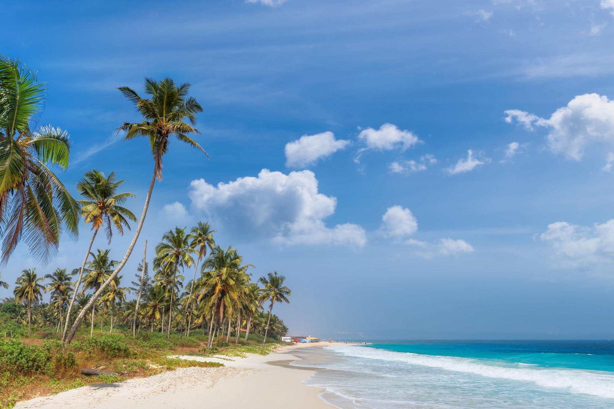
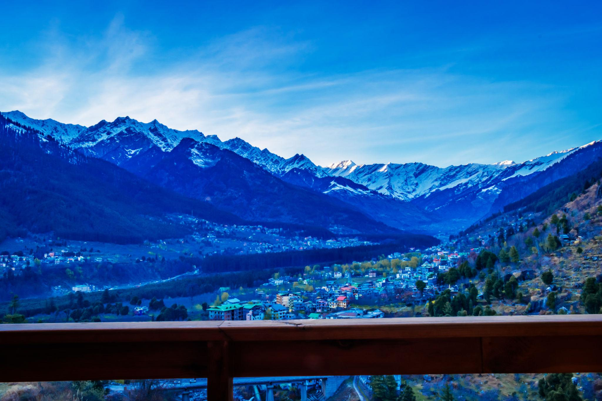
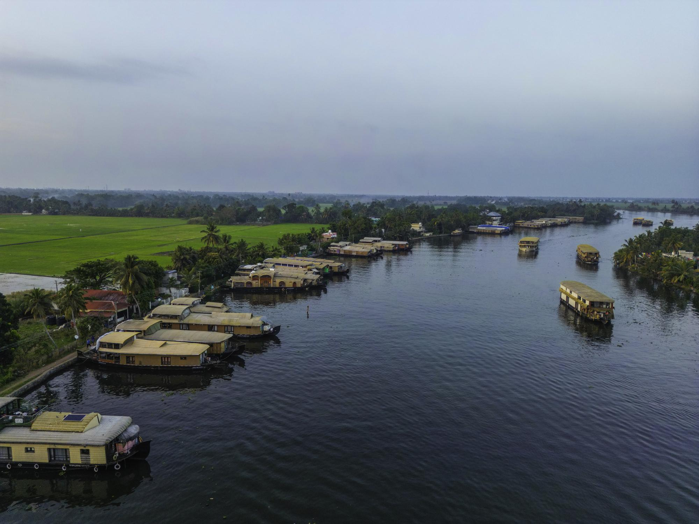

Featured Destinations
GOA

| Beaches, nightlife, water sports |
MANALI

Snow mountains and adventure
KERALA




Manali is one of the most popular and beautiful hill stations in India, located in the state of Himachal Pradesh in the northern part of the country. It is surrounded by the majestic Himalayan mountains, lush green valleys, tall pine forests, and the flowing Beas River, making it a perfect destination for nature lovers and adventure enthusiasts. The cool climate, fresh mountain air, and peaceful atmosphere attract thousands of tourists every year from different parts of India and the world. Manali is famous for its breathtaking natural beauty and scenic landscapes. Visitors can enjoy stunning views of snow-covered mountains, waterfalls, rivers, and green meadows. One of the most popular attractions near Manali is Solang Valley, which is well known for adventure activities such as paragliding, skiing, snowboarding, and ziplining. Another famous place is Rohtang Pass, where tourists can experience snow even during the summer months and enjoy the spectacular mountain views. Apart from adventure and natural beauty, Manali also has cultural and historical significance. The Hadimba Temple, surrounded by cedar forests, is one of the most visited religious sites in the region. Old Manali is another charming area where visitors can explore traditional houses, cozy cafes, small shops, and beautiful riverside views. Manali is also a great destination for trekking, camping, river rafting, and nature photography. The local markets offer handmade crafts, woolen clothes, and souvenirs that reflect the culture of the Himalayan region. With its peaceful environment, scenic beauty, and exciting activities, Manali is an ideal destination for family trips, honeymoon vacations, and adventure travel.
Goa is one of the most famous tourist destinations in India, located on the western coast along the Arabian Sea. It is well known for its beautiful beaches, vibrant nightlife, rich culture, and relaxed atmosphere. Every year, thousands of tourists from India and around the world visit Goa to enjoy its scenic coastline, warm weather, and exciting beach activities. The beaches of Goa are the main attraction for visitors. Popular beaches such as Baga Beach, Calangute Beach, and Anjuna Beach are known for their golden sand, clear blue water, and lively environment. Tourists can enjoy activities like swimming, parasailing, jet skiing, banana boat rides, and beachside dining. Watching the sunset at the beach is also one of the most memorable experiences in Goa. Goa is not only famous for its beaches but also for its unique blend of Indian and Portuguese culture. The state has many historic churches, old buildings, and heritage sites that reflect its colonial past. The Basilica of Bom Jesus and Se Cathedral are two of the most well-known churches visited by tourists. The local food in Goa is another highlight for visitors. Goa offers a variety of delicious seafood dishes, traditional Goan curries, and tropical fruits. Beach shacks and restaurants provide a relaxing place where tourists can enjoy food while watching the sea. In addition to beaches and food, Goa is famous for its vibrant nightlife, music festivals, flea markets, and water sports. Visitors can explore colorful markets, buy handicrafts and souvenirs, and experience the lively atmosphere of the coastal town. With its beautiful scenery, cultural heritage, and fun activities, Goa is a perfect destination for holidays, relaxation, and adventure.
Kerala is a beautiful state located on the south-western coast of India. It is known for its rich natural beauty, peaceful environment, and unique cultural traditions. Because of its stunning landscapes and greenery, Kerala is often called “God’s Own Country.” Kerala is famous for its backwaters, hill stations, beaches, waterfalls, and wildlife. The backwaters are a network of calm canals and lakes where visitors can enjoy relaxing houseboat rides, especially in places like Alleppey. The hill stations such as Munnar are known for their rolling tea plantations, cool climate, and scenic mountain views. Tourists also visit Kerala’s beautiful beaches like Kovalam and Varkala, which offer peaceful sunsets and palm-lined shores.